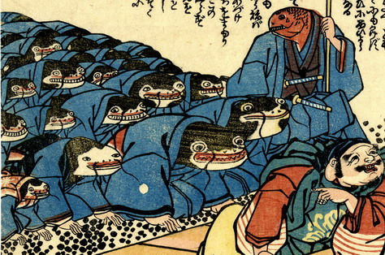

恵比寿天と赤い魚に従った鯰たちが、両手をついて、頭を下げている。鯰は皆青い着物を身につけており、袖から出た手は人間のものである。大きさは様々で、帯を締めた女と思しき鯰、赤い柄の袖無し羽織を着た子供と思しき鯰もいる。平伏しているが、みな薄ら笑いの表情である。
出典：親書誌：U426_nichibunken_0157：恵比寿天申訳之記；エビステンモウシワケノキ／日付：2010／資源識別子：U426_nichibunken_0157_0002_0000
Copyright (c)2010- International Research Center for Japanese Studies, Kyoto, Japan. All rights reserved.